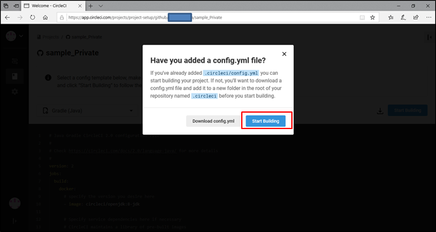
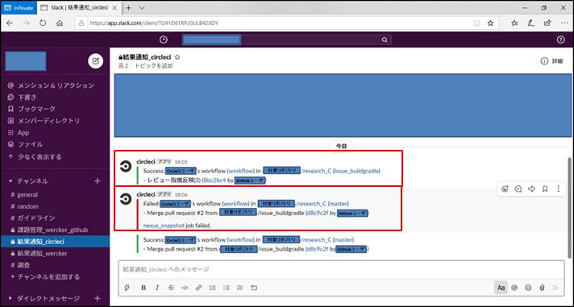
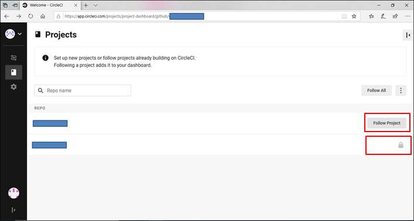
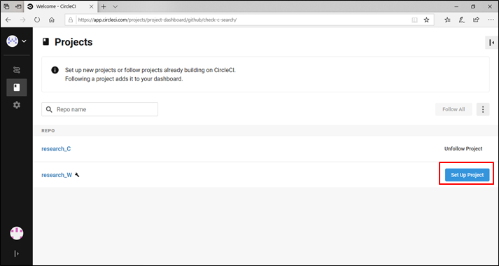
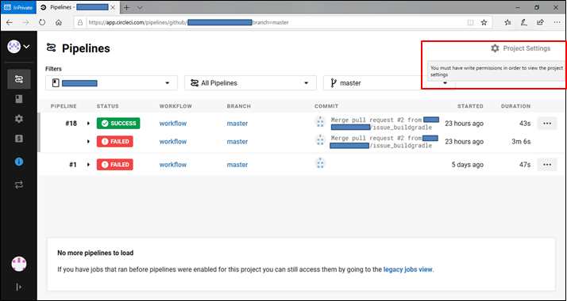
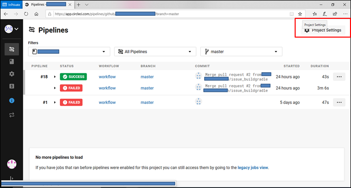

1. はじめに
1.1. 目的
このガイドラインでは、クラウドネイティブな開発を実現する上で要となるCloud環境とCI/CD（継続的インテグレーション/デリバリー）ツールを組み合わせた開発の指針を提示します。
1.2. 背景
- CI/CDツール
-
-
CI/CDツールについてはJenkinsが最も有名であり、多くの運用事例がありますが、実運用に足る構成を実現するためにはチューニングに多くの知識が必要となるため、作業の属人化が発生しやすく、また構築難易度・維持コスト共に高くなるという課題があります。
-
一方で、近年ではWerckerやCircleCIと言ったSaaS型のCI/CDツールの運用事例も増えています。 また、主要なSaaS型ツールはチューニングが設定ファイル1つであることやサービス利用型の特性から、Jenkins運用で懸念される課題を改善することが期待されます。
-
そのため、このガイドラインではCI/CDをSaaS型のツールを利用して実施します。
-
- Cloud環境
-
-
近年のPublicクラウド市場は今だ20％以上の年率で成長していますが、徐々に従来のAWS一強状態からの変化が生まれており、MicrosoftAzureやAlibabaCloudといった脱AWSの選択肢をとる企業も増えてきているため、今後はマルチクラウドへの対応が求められることが予想されます。
-
そのため、このガイドラインではAWS以外のCloud環境に対する知見を得る意味も込めてCloud環境として「AlibabaCloud」を利用します。
-
1.3. 前提事項
このガイドラインは、下記の事項を前提としています。
-
アプリケーションはJavaによるWebアプリケーション（以下AP）を対象とする
-
APの開発フレームワークは「SpringBoot」を利用
-
APのビルドツールは「Gradle」を利用
-
ビルド成果物は単独のjarファイル
-
APサーバ上では、"java -jar"コマンドでjarを実行する処理をShellに記載し、サービス登録することでWebアプリケーションが動いている
1.4. 全体像
このガイドラインで取り扱う環境の全体像は下図の通りです。
Cloud環境・CI/CDツール以外の構成要素として、CI/CDの結果を確認する手段として「Slack」を、リソースのバージョン管理ツールとして「GitHub」を利用します。
2. クラウド環境の設定指針
2.1. 概要
このガイドラインでは、AlibabaCloudを利用します。
クラウド上には、下記2つのサーバを立ち上げます。
-
Webアプリケーション用サーバ
-
開発するAPを配置します。
-
-
SonarQube・Nexus用サーバ
-
Nginxのリーバイスプロキシ制御下にSonarQubeとNexusを配置します。
-
また、各サーバへの接続はロードバランサによるパスルーティングによって振り分けます。
2.2. AlibabaCloudで設定することについて
2.2.1. VPC（Virtual Private Cloud）
AlibabaCloud上のプライベートネットワークです。
サーバを立ち上げる前に、まずはVPCを作成して他の仮想ネットワークからPJで扱う領域を分離します。
設定は、下図のようにAlibabaCloudサイトのVPCコンソールから行います。
2.2.2. VSwith
VPC上のネットワークデバイスです。
後述するECS(仮想サーバ)やSLB(ロードバランサ)等のインスタンスはVSwith上に作成することになります。
設定は、VPC作成時にVPCコンソールから行う他、下図のようにVSwithコンソールから行います
2.2.3. ECS（Elastic Compute Service）
AlibabaCloud上の仮想サーバがESCになります。
下図のようにESCコンソールより設定を行います。
2.2.4. セキュリティグループ
ESCにアクセス可能なポート番号を設定します。
セキュリティグループに設定されていないポートは通信に使用することができません。
また、ポート毎にインバウンドおよびアウトバウンドのアクセス可否を設定することが可能です。
* インバウンド ：外部から内部への通信（外部PCからの自社サービスへのアクセス）
* アウトバウンド：内部から外部への通信（インスタンスからの外部システムへのアクセス）
ESCの初期作成時には、下図のように「-1」「22/22」「3389/3389」ポートのみが利用可能となっているため、適宜編集が必要です。
2.2.5. SLB（Server Load Balancer）
ロードバランサです。
下図のようにSLBコンソールよりSLBの購入を行います。
SLB購入後、「リスナーの作成」より振り分けの設定を行います。
また、「転送ルールの設定」よりパスルーティングを設定します。
2.3. 各サーバの構成について
このガイドラインで取り扱うサーバについてい説明します。 ==== Webアプリケーション用サーバ このサーバでは、開発したAPが配置されています。 * サーバスペック サーバは下記のよう設定しています。 .サーバ
| CPU | メモリ | OS | 帯域幅 | SSH接続 |
|---|---|---|---|---|
1コア |
1GiB |
CentOS 7.7 64-bit |
1Mbps (ピーク値) |
キーペアによる公開鍵認証 |
| 入力/出力 | ポート番号 | 権限付与IPアドレス |
|---|---|---|
入力 |
80/80 |
0.0.0.0/0 ※検証のためフルオープン |
-
アプリケーション起動方式 APは、下図のようにAPを「Java -jar」コマンドにより起動するShellにより起動されます。
また、AP起動Shellは下図のように「/etc/systemd/system」配下にサービス登録がされており、「systemctl enable」コマンドによりESCインスタンス起動時に自動実行されるようになっています。
2.3.1. SonarQube・Nexus用サーバ
このサーバでは、CI/CDツール実行後にテスト結果とビルド資産を配置するためにSonarQubeとNexusが起動しています。 * サーバスペック サーバは下記のよう設定しています。 .サーバ
| CPU | メモリ | OS | 帯域幅 | SSH接続 |
|---|---|---|---|---|
2コア |
4GiB |
CentOS 7.7 64-bit |
2Mbps (ピーク値) |
キーペアによる公開鍵認証 |
| 入力/出力 | ポート番号 | 権限付与IPアドレス |
|---|---|---|
入力 |
80/80 |
0.0.0.0/0 ※検証のためフルオープン |
入力 |
8080/8080 |
0.0.0.0/0 ※Nginxのポート番号 |
-
アプリケーション起動方式 SonarQubeとNexusはNginxによるリバースプロキシ制御下で起動しています。
各アプリケーションは、下図に示す設定でdocker起動しています。
2.4. ネットワークの構成について
各サーバは、下記のようにSLBによるパスルーティングによって外部から接続するように設定しています。
| ドメイン | URL | 接続先ポート |
|---|---|---|
SLBのIP |
/nexus |
SonarQube・Nexus用サーバの8080番 ※Nginxのポート番号 |
SLBのIP |
/sonarqube |
SonarQube・Nexus用サーバの8080番 ※Nginxのポート番号 |
SLBのIP |
/web |
Webアプリケーション用サーバの80番 |
|
SonarQube・Nexus用サーバではNginxのリバースプロキシにより、 |
3. CI/CDツールの設定指針
3.1. 概要
-
CI/CDツールでは、Github上の対象リポジトリについて、ブランチ毎に実行するパイプラインの処理（ビルド・テスト・デプロイ…etc）を指定します。
-
SaaS型CI/CDツールを利用する場合、パイプラインで実行する処理は全て設定ファイルに記載するし、設定ファイルを対象リポジトリのルートディレクトリ配下に配置することで、Githubでの動作を契機としてパイプラインが実行されます。
|
SaaS型ツールの代表例としては、特に運用事例の多い下記3ツールが挙げられますが、このガイドラインでは、初期構築のしやすさの観点から「CircleCI」を例として指針を提示します。
|
3.1.1. CI/CDで行うことについて
ローカル環境で作成・修正したアプリケーション（以降AP）に対して、下記の処理を自動実行します。
- ビルドチェック
-
ビルドツールによるビルドを行うことで、各種ライブラリとの依存関係が解消されており、APが実行環境で動作可能な状態であることを保証します。
- テスト
-
ローカル環境で使用したテストコードでビルドしたAPのJunitテストを行います。
また、SonarQubeによる静的検証（Checkstyle、SpotBugs）を行います。 - ビルド資産の管理
-
ビルドに成功したAPをNexusに登録することで、ビルド資産のバージョン管理を行います。
- デプロイ
-
ビルドに成功したAPを実行環境にデプロイします。
3.1.2. ブランチ戦略
アプリケーションはGitHubのリポジトリで管理し、状態毎に下記のブランチを切って管理を行います。
| ブランチ | ブランチ名 | 説明 | 作成/削除タイミング |
|---|---|---|---|
masterブランチ |
master |
常に最新版のブランチ |
常に存在する |
issueブランチ |
issue<簡単な説明> |
作業用のブランチ |
issueに基づいて、作業担当者がmasterブランチより作成する |
releaseブランチ |
release |
リリース用のブランチ |
リリースの際にライブラリ管理者がmasterブランチより作成する |
3.1.3. タグによるリリースバージョン管理
アプリケーションのリリースバージョンはGitHubのタグで管理し、CI/CD内で下記の様式に従ってタグを生成する。
| ブランチ | タグ名 | 作成タイミング |
|---|---|---|
master |
version-＜メジャーバージョン＞.＜マイナーバージョン＞.＜リビジョンバージョン＞-SNAPSHOT |
PRをmergeした際 |
master |
version-＜メジャーバージョン＞.＜マイナーバージョン＞.＜リビジョンバージョン＞-RELEASE |
releaseした際 |
3.1.4. ブランチ毎のCI/CDフロー
パイプライン上ではブランチ毎に下記の処理を実行する。
| ブランチ | パイプライン起動の契機 | 実行処理 |
|---|---|---|
issueブランチ |
ローカル環境よりGitHub上にpushした際 |
ビルドチェック Junitテスト SonarQubeへのJunitテスト結果連携、静的検証 |
masterブランチ |
PRをmergeした際 |
ビルドチェック Junitテスト SonarQubeへのJunitテスト結果連携、静的検証 Nexusへのライブラリ登録 最新のmasterブランチに対してタグ打ち |
releaseブランチ |
ローカル環境よりGitHub上にpushした際 |
ビルドチェック Junitテスト Nexusへのライブラリ登録 最新のmasterブランチに対してタグ打ち |
3.2. SonarQube連携について
-
Junitテストの結果を連携する
-
Checkstyleによる静的検証を実施する
-
SpotBugsによる静的検証を実施する
-
カバレッジ情報を表示する
3.3. Nexus連携について
-
PRをmergeしたタイミングでSNAPSHOTリポジトリにビルド資産を連携する
-
releaseブランチをGitHub上に作成したタイミングでRELEASEリポジトリにビルド資産を連携する
3.4. 設定ファイルで指定することについて
3.4.1. 設定ファイルの記載方法
CircleCIの設定ファイル「config.yml」の基本構成は下記のようになっており、適宜PJの方針に合わせて必要な処理を記述する。
|
設定ファイルは、大きく下記の3ブロックより構成される。
|
### 基本構成
#CircleCIのバージョン指定
version: 2.1
#以下パイプラインの処理記述
jobs:
build:
#実行環境
docker:
- image: Dockerイメージ
#以下、処理「build」の実処理
steps:
- checkout ※対象コードチェックアウト
- 処理②...
deploy:
docker:
- image: Dockerイメージ
steps:
- checkout
- 処理②...
#以下ワークフローの記載
workflows:
version: 2
workflow:
jobs:
- build:
filters:
branches:
only:
- 対象とするブランチ名
post-steps:
- 定常実行処理
- deploy:
requires: ※先行処理
- build
#以下、定時実行ワークフローの記載
nightly:
triggers:
- schedule:
cron: "25 * * * *"
filters:
branches:
only:
- master
jobs:
- build:
filters:
branches:
only:
- /^issue\/.+/
- deploy:
requires:
- build|
設定ファイル記述の詳細については、下記の公式ドキュメントを参照
特に下記ページを起点にすると、設定ファイル全体の内どの部分にあたる記述なのかをイメージしやすく、作業を効率よく進められます。
|
3.4.2. SonarQube連携方法
| 1 | build.gradleファイルに下記の記載を行う |
| 2 | config.ymlファイルに下記の記載を行う |
plugins {
id "org.sonarqube" version "2.8"
}
…
sonarqube {
properties {
property "sonar.jacoco.reportPath", "${project.buildDir}/jacoco/test.exec"
}
}##"./gradlew sonarqube"コマンドによるSonerQubeサイトで設定した検証の実施と結果連携を行う。
jobs:
…
sonarqube:
…
steps:
- checkout
- run:
name: analyze by SonarQube
command: |
./gradlew clean sonarqube \
-Dsonar.host.url=$SONAR_HOST_URL \
-Dsonar.jdbc.url=$SONAR_JDBC_URL \
-Dsonar.jdbc.driverClassName=$SONAR_JDBC_DRIVER \
-Dsonar.jdbc.username=$SONAR_JDBC_USERNAME \
-Dsonar.jdbc.password=$SONAR_JDBC_PASSWORD \
-Dsonar.projectName="${CIRCLE_BRANCH}"_"${CIRCLE_BUILD_NUM}"3.4.3. Nexus連携方法
| 1 | build.gradleファイルに下記の記載を行う |
| 2 | config.ymlファイルに下記の記載を行う |
plugins {
id "maven-publish"
}
…
publishing {
publications {
mavenJava(MavenPublication) {
groupId = group
artifactId = archivesBaseName
from components.java
}
}
repositories {
maven {
url System.getenv("NEXUS_URL")
credentials {
username = System.getenv("NEXUS_USERNAME")
password = System.getenv("NEXUS_USERPASSWORD")
}
}
}
}|
publishingタスクの詳細な記載方法は、下記公式ドキュメントを参照 |
##"./gradlew upload"コマンドによるビルド成果物のNexus録を行う。
jobs:
…
nexus:
…
steps:
- checkout
- run:
name: upload to NEXUS
command: |
./gradlew clean build publish3.4.4. 設定ファイルの配置
作成した設定ファイルは、ルートディレクトリ直下の「.circleci」ディレクトリ配下に配置することでGitHubへの操作を契機としCircleCIによりCI/CDが実行されます。
3.5. Webサイト(CircleCI)で指定することについて
-
「CircleCIサイトURL」 https://circleci.com
ログイン方法等については、公式ドキュメントを参照
* ＜CircleCI公式ドキュメント＞ https://circleci.com/docs/
3.5.1. 対象リポジトリの登録
「Add Projects」よりCI/CD対象のリポジトリ登録を行います。
Github上のリポジトリの公開設定に関わらず登録が可能です。
また、後述する設定を行うことで自身が所属するOrganization所有のリポジトリを権限に応じて利用可能です。
1 ダッシュボード画面より「Add Projects」を選択する。
2 GitHub側の公開設定に関わらず、全リポジトリが表示されるので対象とするリポジトリを選択する。
3 ビルドツールを選択して、「Start Building」でリポジトリ登録を開始する。
4 「Start Building」を押すと下記のポップアップが表示されるので適宜「Add Manually」か「Add Config」を選択する。
|
「Add Config」を選択した場合、図に表示されているようにブランチが作成され、.circleci配下に設定ファイル（config.yml）が作成される。 その後、設定ファイルに基づいて初回のパイプライン実行が行われる。 ※設定ファイルの内容は前画面で表示されたデフォルトの内容になるので、初回のパイプライン実行は上手くいかないことが多いです。 |
|
Add Manually」を選択した場合、下記のポップアップが表示されるので適宜設定ファイルを.circleci配下に準備してから「Start Building」をクリックする。

|
4 初期パイプライン実行が行われると、下図のように実行が表示される。
5 登録済みのリポジトリは「Set Up Project」ボタンが「Unfollow Project」ボタンに変わっているので、これを押すとリポジトリ登録が解除される。
3.5.2. 環境変数の登録
「config.yml」や「build.gradle」に記載した環境変数はパイプライン起動時にCircleCI画面で設定した値に自動的に置き換えられる。
1 対象リポジトリのパイプライン画面より「Project Settings」を選択する。

2 Project Settings画面で「Environment Variables」を選択して、「Add Config Variable」を押すことで環境変数と変数値を設定できる。
Project Settings画面で「Environment Variables」を選択して、「Add Config Variable」を押すことで環境変数と変数値を設定できる。
3 「Add Config Variable」を押すと下記のポップアップが表示されるので、任意の環境変数と変数値を入力して「Add Environment Variable」を押す。
既存の環境変数を入力すると変数値を置き換えることができる。
4 「✕」を押すと下記のポップアップが表示されるので、テキストボックスに「DELETE」と入力して「Delete Environment Variable」を押す。
|
自分で設定する環境変数以外にも、CircleCIデフォルトで準備されている環境変数が存在する。 「CircleCIサイト＞環境変数の使い方」 |
3.5.3. 実行結果の発報
パイプライン事項結果をPJのチャットツール（このガイドラインではSlack ）に連携する。
1 Slackの「App」よりCircleCIアプリを追加して、「セットアップの手順」に従ってCircleCIに設定する。
|
実行結果は、下記の方式でCircleC及びGitHubへのリンク付きで連携される。

|
3.5.4. Organizationアカウントのrepositoryを参照するための設定
1 Organizationのリポジトリを登録する場合、自身のアイコンをクリックして「User Setting」画面より設定を行う。
2 「User Setting」画面で「Account Integrations」→GitHuｂの「Check permissions」を選択して、GitHub画面を開く。
3 画面下の「Organization access」に自信が所属しているOrganizationが表示されるので、その内容を確認して「Grant」ボタンを押下する。
この操作でOrganization所有のリポジトリを参照できるようになる。

|
Organization所有のリポジトリについては、Organization内での自アカウントの権限によって操作が制限される。



リポジトリへのアクセス権限が「書込み」以上の場合、下図に示すように「ProjectSettings」が活性になるため環境変数を含め、リポジトリの設定を変更することが可能です。

|